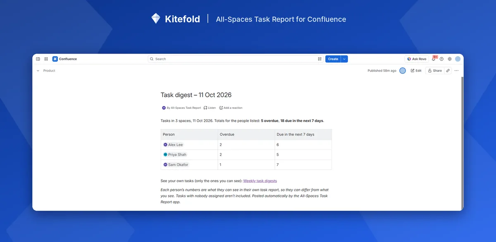

How to send a weekly reminder for overdue Confluence tasks
Confluence doesn't send due-date or overdue reminders for tasks. The person you @mention in a task is notified once, when it's created. To remind people every week, post a digest page that @mentions everyone with overdue tasks, so Confluence's own notifications email them.
What Confluence does on its own
- When a task is created, the person @mentioned in it is notified, like any other mention.
- When it's overdue, the date turns red on the page. Nobody is told.
- There's no reminder setting. Atlassian's requests for due-date notifications (CONFCLOUD-35150) and for a daily or weekly task digest email (CONFCLOUD-34389, open since 2014) are both still “Gathering interest”.
A manual workaround
Set a weekly calendar reminder for each person to open their Tasks list (profile picture → Tasks), or for a team lead to check a Task report sorted by due date and chase people. It works, but it depends on someone remembering.
Automatically with All-Spaces Task Report
- Create a page to hold the digests, for example “Weekly task digests”.
- Edit it, type
/and add Weekly task digest. Choose which spaces to count and the day to post (Monday to Friday). - Publish, then press Turn on. Press Post one now to see the first one straight away.
Each week the app posts a new page listing everyone with tasks overdue or due in the next 7 days, and @mentions them, so Confluence emails each person. The digest shows counts only, never task text or page titles, and each person's numbers are what they'd see in their own report.
Put an All-Spaces Task Report set to Me on the same page: the digest links back to it, so people go straight from the email to their own list.

Disclosure: Kitefold makes All-Spaces Task Report, so we're not neutral. The built-in options above are free and may be all you need.
Related guides
- How to see all tasks across Confluence spaces
- How to find overdue tasks in Confluence
- How to see all the Confluence tasks assigned to you
- Confluence tasks cheat sheet
Checked against Confluence Cloud in November 2026. Confluence changes often; if something here no longer matches what you see, email support@kitefold.app and we'll update it.